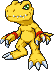
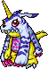
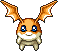

CONNECTION ESTABLISHED
Digimon
Sapphire.
Eight Digital Keys.
Help Matt and Gabumon find the way home.
DIGITAL GATE / SAPPHIRE
WELCOME TO YOUR NEXT ADVENTURE
CONNECTION ESTABLISHED
Eight Digital Keys.
Help Matt and Gabumon find the way home.

A little courage.
A whole lot of fire.


Your next teamTWO CARTRIDGES. ONE DIGITAL GATE.
Your Digimon adventure has its own home.
This project uses separate game files and browser saves from Sapphire Wednesday.
A FEW THINGS BEFORE YOU DIVE IN
Click inside the game before using keys. The emulator toolbar lets you remap controls and configure a gamepad.
Save in the game. Use its SAVE menu, then allow a few seconds for it to finish.
Keep a backup. Open Save Data above the game to copy or download a complete JSON checkpoint. Paste it back and choose Load to continue. Automatic checkpoints run every 60 seconds.
Keep the same browser. Local saves belong to this browser at 127.0.0.1:8744. Clearing site data can remove them.
Start a new adventure. Use a new save for the conversion. Original Pokémon saves are not guaranteed to match the new roster.
Double-click Launch Digimon Sapphire.command and keep its Terminal window open. The emulator, art, and fonts are bundled for local play.
Tai and Matt are trapped in a glitch world built on Hoenn. Collect eight Digital Keys, face the Dark Masters, and reunite for Omegamon’s return-home finale. Each cartridge keeps its own save.
Read the project notes ↗